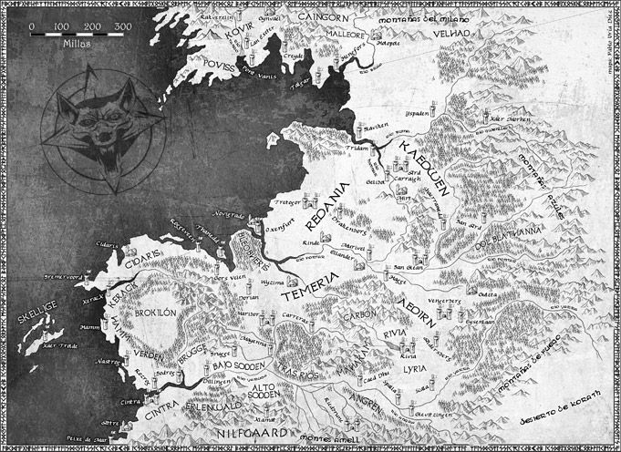

A história
A série The Witcher é baseada nos dois primeiros livros homônimos, chamados O Último Desejo e Espada do Destino. Eles são coletâneas que totalizam 13 contos que mostram histórias independentes protagonizadas por Geralt de Rívia, geralmente sobre caçadas de monstros ou introdução de algum personagem importante para ele, como Yennefer, Jaskier e Ciri. A primeira temporada adapta nove deles e tenta colocá-los em ordem cronológica, tendo vários saltos temporais. Então esqueça os jogos e as HQs baseadas nos livros, a série não adapta nada delas. Ao contrário dos livros, o protagonismo é dividido entre Geralt, Yennefer e Ciri — alternando entre os arcos dos personagens ao decorrer dos episódios. Isso faz com que a série tenha três linhas temporais diferentes. A primeira está no presente e acompanha a busca de Ciri pelo bruxo. Já a segunda está no passado e mostra Geralt nos contos. Por fim, a terceira e última é a história de Yennefer em um passado mais distante ainda, que não foi contado nos livros. É preciso entender a diferença básica de tempo entre os três arcos porque a série não explica, deixando subentendido em diálogos no meio dos episódios. Vale ainda ressaltar que os saltos temporais não acontecem em todos da mesma maneira. Algum pode ter um salto maior do que o outro. Por exemplo, o arco de Yennefer tem um salto temporal para alcançar Geralt, fazendo então a série ficar com apenas duas linhas temporais diferentes.
O continente
O mundo de The Witcher é chamado de Continente, que é dividido entre Reinos do Norte e do Sul. Isso porque o principal pano de fundo da história aqui é a guerra que o Império Nilfgaardiano dá início para conquistar os Reinos do Sul. Em relação aos arcos, o presente mostra Cirilla, logo depois do Massacre de Cintra causado pelo exército nilfgaardiano. O importante para saber aqui, é que ela estava sendo criada pelos avós, a Rainha Calanthe e o Rei Eist Tuirseach, que governavam Cintra. Como seus pais morreram quando ainda era bebê, Ciri se tornou a herdeira do trono. Assim como nos jogos, Ciri é portadora do Sangue Antigo e, por isso, tem alguns poderes misteriosos envolvendo o tempo e o espaço — e esse também é o motivo pelo qual Nilfgaard tem interesse em capturá-la. O passado mais próximo acompanha Geralt de Rívia em nove contos diferentes dos livros. A série estabeleceu uma ordem cronológica entre eles, apresentando personagens importantes, como Jaskier (o Dandelion em The Witcher 3) e Visenna — a mãe do bruxo. Por fim, o passado mais distante é de Yennefer de Vengerberg, mostrando a “história de origem” da personagem, que passou de uma menina com a medula desfigurada para uma das feiticeiras mais poderosas do mundo. É aqui que a magia do universo é explicada e figuras revelantes, como os magos Istredd e Tissaia, são apresentados.